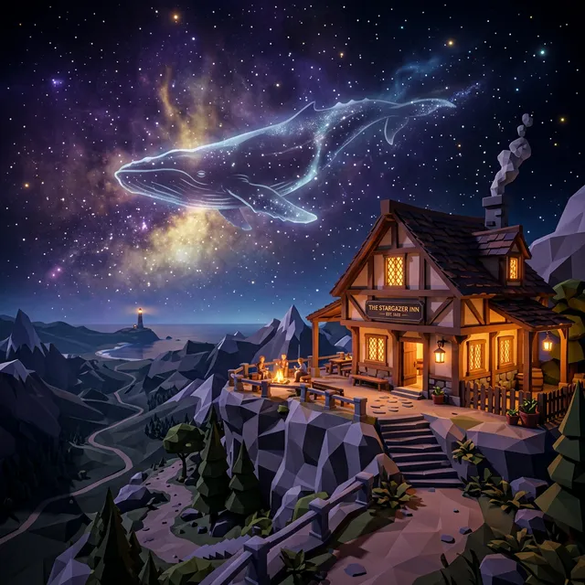
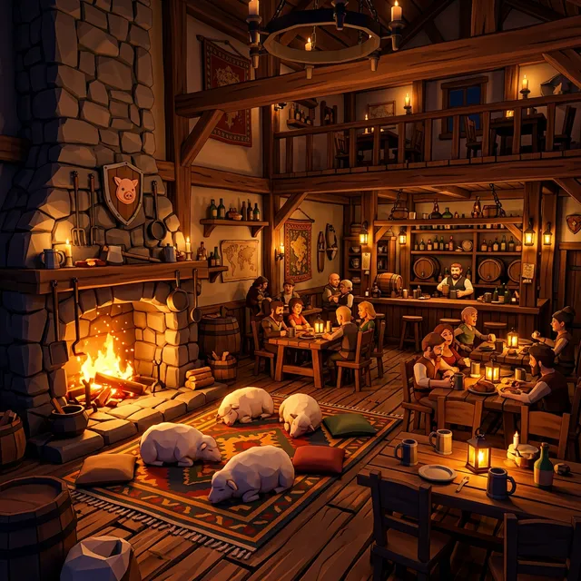
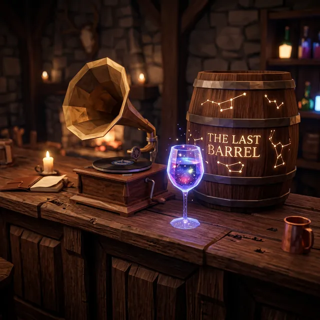
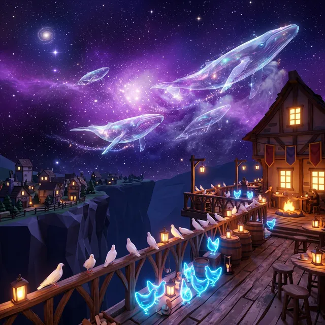
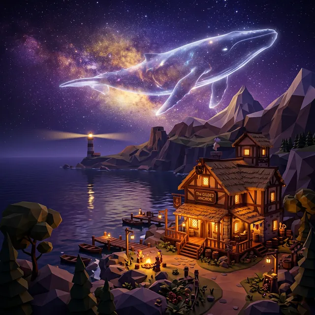
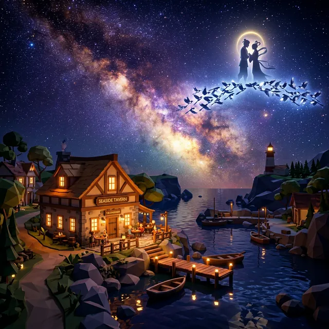

在悬崖与海风之间，有一家重新亮起灯的老店。
这里不仅是你的大本营，更是整个世界的温柔中枢。外面的故事、人物与传闻，最终都会在这里沉淀成菜谱、客人和传说。
在悬崖与海风之间，有一家重新亮起灯的老店。
这里不仅是你的大本营，更是整个世界的温柔中枢。外面的故事、人物与传闻，最终都会在这里沉淀成菜谱、客人和传说。
读人不读表。看客人的情绪，听他们的暗示，用恰到好处的风味打开他们的心扉。
从海岸平原到繁茂林地，亲手种下原料。每一杯酒里都藏着季节的色泽。
山地绒羊、微光雾尾鸡。在炉火边看它们打滚，是漫长冒险后最好的慰藉。
沿着灯塔的光芒，在废弃电台与遗迹前哨中寻找失落的传闻与旧日书信。
低多边形的极简美感，配以极致的灯光意境。

「悬崖边的长椅上，脚下是万丈星河。」
温暖的壁炉与休憩的绒羊

醇厚的木质吧台与古老录音机

看夜空中的宇宙生物缓缓游过

浩瀚星云下的海边酒馆，巨大的幽灵鲸鱼划过夜空

浪漫星空之下，牛郎织女在鹊桥温柔相遇
地窖深处，存放着一坛停战年份的陈酿。它封存着一个秘密，等待着在最合适的那个夜晚被开启。
“把散落在小世界里的传闻酿成酒，讲清一个关于和平的秘密。”